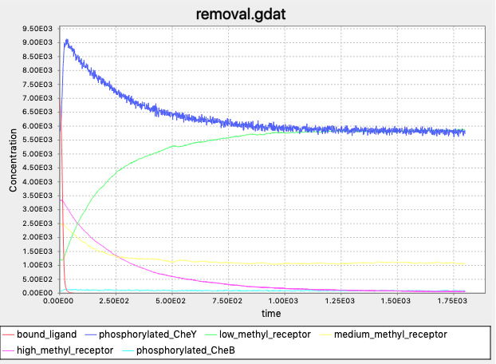
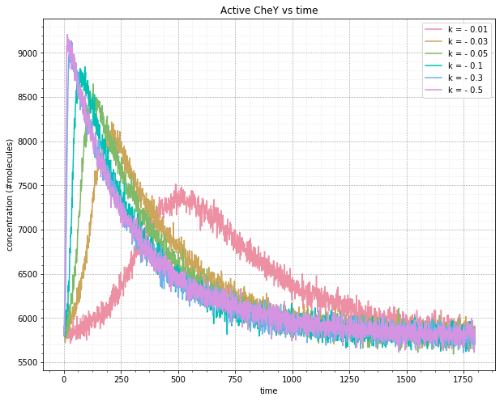

Modeling a Bacterium’s Response to an Attractant Gradient
Traveling up an attractant gradient
In the previous lesson, we saw that E. coli is able to adapt its default tumbling frequency to the current background concentration of attractant. To model this behavior, we used the Gillespie algorithm and the rule-based language of BioNetGen to simulate an instantaneous increase in concentration from one stable concentration level to another.
Yet imagine a glucose cube in an aqueous solution. As the cube dissolves, a gradient will form, with a decreasing glucose concentration that radiates outward from the cube. How will the tumbling frequency of E. coli change if the bacterium is moving up a gradient of increasing attractant concentration? Will the tumbling frequency decrease continuously as well, or will the methylation pathways mentioned in the previous lesson cause more complicated behavior?
Furthermore, once the cell reaches a region of high attractant concentration, will its default tumbling frequency stabilize to the same steady-state? And how much does this steady-state tumbling frequency change as we alter the “steepness” of the attractant gradient (i.e., how quickly the attractant concentration increases)?
In the following tutorial, we will modify our model from the previous lesson by increasing the concentration of the attractant ligand at an exponential rate and seeing how the concentration of phosphorylated CheY changes. Moreover, we will examine how this concentration changes as we change the gradient’s “steepness”, or the rate at which attractant ligand is increasing.
Steady-state tumbling frequency is robust when traveling up an attractant gradient
Recall that we used the expression [L] to denote the concentration of ligand L and l0 to denote the initial concentration of the ligand. If the concentration of the ligand is growing exponentially, then [L] = l0 · ek · t, where t is the time since the start and k is a parameter dictating exponential growth; the higher the value of k, the faster the growth in the ligand concentration.
For example, the following figure depicts the concentration of phosphorylated CheY (shown in blue) over time when l0 = 1000 and k = 0.1. The concentration of phosphorylated CheY, and therefore the tumbling frequency, still decreases sharply as the ligand concentration increases, but after all ligands become bound to receptors (shown by the plateau in the red curve), the methylation of receptors causes the concentration of phosphorylated CheY to return to its equilibrium. In other words, for these values of l0 and k, the outcome is similar to when we provided an instantaneous increase in ligand, although the cell takes longer to reach a minimum concentration of phosphorylated CheY because the attractant concentration is increasing gradually.
 Plots of relevant molecule concentrations in our system when the concentration of ligand grows exponentially with l0 = 1000 and k = 0.1. The concentration of bound ligand (shown in red) quickly hits saturation, which causes a minimum in phosphorylated CheY (and therefore a low tumbling frequency). To respond, the cell increases the methylation of receptors, which boosts the concentration of phosphorylated CheY back to equilibrium.
Plots of relevant molecule concentrations in our system when the concentration of ligand grows exponentially with l0 = 1000 and k = 0.1. The concentration of bound ligand (shown in red) quickly hits saturation, which causes a minimum in phosphorylated CheY (and therefore a low tumbling frequency). To respond, the cell increases the methylation of receptors, which boosts the concentration of phosphorylated CheY back to equilibrium.
Our next question is what happens as we change k, the growth rate of the ligand concentration. The following figure shows the results of multiple simulations in which we vary the growth parameter k and plot the concentration of phosphorylated CheY over time. The larger the value of k, the faster the increase in receptor binding, and the steeper the drop in the concentration of phosphorylated CheY.
 Plots of phosphorylated CheY for different growth rates k of the concentration of ligand. The larger the value of k, the steeper the initial drop as the concentration of bound ligand becomes saturated, and the faster that the concentration of phosphorylated CheY returns to equilibrium.
Plots of phosphorylated CheY for different growth rates k of the concentration of ligand. The larger the value of k, the steeper the initial drop as the concentration of bound ligand becomes saturated, and the faster that the concentration of phosphorylated CheY returns to equilibrium.
More importantly, the above figure further illustrates the robustness of bacterial chemotaxis to the rate of growth in ligand concentration. Whether the growth of the attractant is slow or fast, methylation will always bring the cell back to the same equilibrium concentration of phosphorylated CheY, and therefore the same background tumbling frequency.
Reversing the attractant gradient
And what if a cell is moving away from an attractant, down a concentration gradient? We would hope that the cell would be able to increase its tumbling frequency (i.e., increase the concentration of phosphorylated CheY), and then restore the background tumbling frequency by removing methylation.
To simulate a decreasing gradient, we will model a cell in a high ligand concentration that is already at steady-state, meaning that methylation is also elevated. In this case, the ligand concentration will decay exponentially, meaning that the ligand concentration is still given by the equation [L] = l0 · ek · t, but k is negative.
STOP: If k is negative, what happens to the plot of [L] = l0 · ek · t for decreasing values of k? How do you think the value of k will affect the concentration of phosphorylated CheY over time?
You may like to modify the previous tutorial on your own to account for traveling down an attractant gradient. If not, we are still happy to provide a separate tutorial below.
Steady-state tumbling frequency remains robust when traveling down an attractant gradient
The following figure shows the plot of molecules in our model as the concentration of attractant ligand decreases exponentially with l0 = 107 and k equal to -0.3. As the ligand concentration decreases, the concentration of bound ligands plummet as bound ligands dissociate and there are not enough free ligands to replace the dissociating ones. In the absence of ligand-receptor binding, CheY can readily phosphorylate, causing a spike in phosphorylated CheY. Demethylation of receptors then causes the concentration of phosphorylated CheY to steadily return back to its equilibrium.
 Simulating a bacterium traveling down an attractant gradient with l0 = 107 and k equal to -0.3. Phosphorylated CheY follows the opposite pattern to traveling up an attractant gradient, with the concentration of phosphorylated CheY rising quickly only to slowly decrease to equilibrium due to demethylation.
To be thorough, we should also test the robustness of our model to see whether the CheY concentration will return to the same steady-state for a variety of values of k when k is negative. As in the case of an increasing gradient, the figure below shows that the more sudden the change in the concentration of attractant, the sharper the spike. And yet regardless of the value of k, methylation does its work to bring the concentration back to the same steady-state. More importantly, this figure and the one above are confirmed by experimental observations.1
 Varying values of k in our exponential decrease in the concentration of attractant ligand produce the same equilibrium concentration of phosphorylated CheY. The smaller the value of k, the steeper the initial spike, and the faster the recovery to steady state.
From changing tumbling frequencies to an exploration algorithm
We hope that in exploring this module, you have gained an appreciation for the elegant mechanism of bacterial chemotaxis, as well as the power of BioNetGen’s rule-based modeling for simulating a complex biochemical system without the need to keep track of individual particles.
And yet we have made a major omission. E. coli goes to great lengths to ensure that if it detects a relative increase in concentration (i.e., an attractant gradient), then it can reduce its tumbling frequency in response. But what we have not explored is why this change in the bacterium’s tumbling frequency would help it find food.
After all, the direction that a bacterium is moving at any point in time is random! So why would a decrease in tumbling frequency help E. coli move toward an attractant?
This question is a biologically deep one and it has no intuitive answer. However, in this module’s final lesson, we will build a model to explain why E. coli’s random-walk algorithm with a variation in tumbling frequency is in fact an extremely clever way of locating resources in a strange new land.
-
Krembel A., Colin R., Sourijik V. 2015. Importance of multiple methylation sites in Escherichia coli chemotaxis. Available online ↩